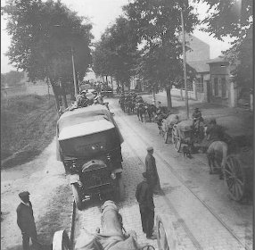
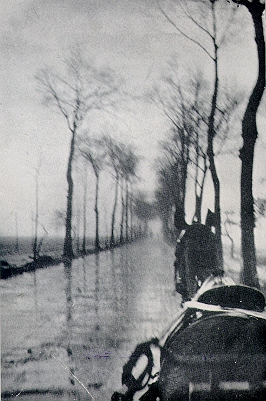
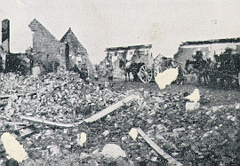
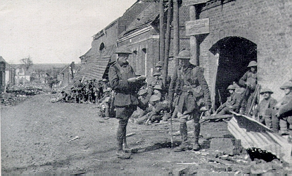

The Somme 1917
(text in italics is extracted from the 2/5 Leicesters War Diary)
6/1/1917 - 24/2/1917 Fovant (No.4 Camp)
The move back to Salisbury Plain was accompanied by embarkation leave prior to departure for France. The weather at Fovant was bitterly cold but musketry and other training continued. On February 13th the King inspected the 59th Division and presented decorations won during the Easter Rebellion.
23/2/1917 - Fovant . In camp (hutments) pending embarkation overseas.
24/2/1917 - Entrained at Dinton for Southampton en route for BEF France. Left Southampton at 4.15pm crossed to Havre where we arrived and disembarked at 7.30am.

25/2/1917 - Havre . Entrained at Gare de Marchadises at 10.30pm for Saleux .
26/2/1917 - Saleux. Detrained and marched to Petit St Jean arriving at about 5pm.
27-28/2/1917 - Petit St Jean. In billets.
1/3/1917 - Petit St Jean. Marched to Fouencamps occupied billets.
2/3/1917 - Marched to Camp 59 Mourcourt. Occupied hutments.
3-7/3/1917 - At Camp 59

The road to the front
8/3/1917 - Marched to Bois Triangulaire and took over trenches as battalion reserve. 4th and 5th Lincolns in the front line.
9-12/3/1917 - In Brigade reserve.
The 59th Division was sent immediately to the Front to relieve the 50th Division and to carry out mobile operations in pursuit of the Germans who were retiring to their Hindenburg Line. The battalion occupied trenches at Foucoucourt. The long frost had broken and the effect of the thaw on the badly constructed trenches was devastating. It was difficult in most of the front line to move, except over the top. The area was, however, generally quiet except for enemy snipers.
13/3/1917 - Bois Triangulaire P.C. Nancy Relieved 5th Lincolns in front line as left battalion in Brigade sector. 4th Leicesters on the right and Welsh Regiment and 1st Division on the left. D Company in reserve.
14-15/3/1917 - P.C.Nancy
On March 16th orders were received stating that next day the forward battalions were to assist the operations of adjoining troops by simulating an attack. A raid was also to be carried out that night by the 2/5 Leicesters. Both of these plans were however altered when on march 17th it was found that the Germans had retired. The next few days were spent following the retreating enemy, assisted by cavalry and spotter aircraft. The weather was intensely cold and the nature of the operation made the feeding of patrolling troops difficult. The retreating Germans had destroyed all normal communications which increased the traffic congestion and delayed supply wagons. There was little shelter and even when an attractive place was found it was necessary to place it 'out of bounds' owing to the danger of booby traps and delay action mines.
18/3/1917 - Reports received that enemy had retired - patrols pushed forward - both advance and occupy trenches as far forward as Argus Trench where line was consolidated. Patrols pushed forward to the River Somme and reported that no enemy in sight.
The roads were blown to pieces, having been 'No Mans Land' for two and a half years. It snowed or rained every day and froze hard every night. Men and animals suffered as there was no shelter. The retreating Germans had blown in their dug outs and all the houses in every village. Conditions and the rapid German retreat also created difficulty in maintaining supply lines.
19/3/1917 - Further consolidation of position in Argus Trench - patrols crossed River Somme and reported no enemy in sight. 1st Division on left move forward to position in Erfurt Trench on east side of the River Somme .
20/3/191 - Relieved by the 8th Sherwood Foresters. Marched to Divisional rest at Foucaucourt (Cantonnement des Pommiers) .
26/3/1917 - Foucaucourt . Marched to Le Mesnil .
27/3/1917 - Le Mesnil . Marched to Hancourt which was occupied by the 18th Bengal Lancers, 48th Division Cyclists and part of 2/5 Sherwood Foresters.

27-29/3/1917 - Hancourt . Working parties nightly to make line of cruciform posts joined up by wire along the east of Nobiscourt Line .
30/3/1917 - Marched to Roisel .

Troops rest before the attack on Hesbecourt
Contact with enemy rearguards was usually maintained by forward patrols. On March 31st an organised attack was made on the villages of Hesbecourt and Hervilly. This attack was carried out by 2/5 Leicesters assisted by one troop of Corp Cavalry and a platoon of cyclists.
31/3/1917 - 1pm Artillery commenced intense bombardment on Hervilly and Hesbecourt . 1.45pm C Company reported Hervilly clear. One platoon entered Hervilly . 1.35pm drove out enemy patrol and captured wounded prisoner. Outpost pushed out to east end of Hervilly Wood . Attack launched on Hesbecourt , A Coy on left and D Coy on right. Attack held up for 20 minutes by machine gun fire. 2.25pm Advance continued, enemy seen to be retiring from Hesbecourt . 3pm Hesbecourt occupied. A covering line 1000 yards east of the village taken up. The village heavily shelled and casualties incurred. Companies reorganised to attack Hill 140 . 4.15pm patrols report Hill 140 clear. A and D Coys advance and occupy Hill 140 and Battn HQ moved up to Hesbecourt . 5pm positions consolidated. C Coy thrown out as outpost line in front of line. Casualties 1 killed, 18 wounded and 5 missing.
The enemy was in some strength but both villages were captured. While forward troops were re-organising on high ground north east of Hesbecourt enemy artillery inflicted a number of casualties. The final objective, Hill 140, was captured and an outpost line established.
There were few standing walls in any of the captured villages. British troops did find the graves of two British airmen in Hesbecourt. There were plenty of cellars and after a search for booby traps the weary troops sought what shelter they could. But Hesbecourt could not be secured as it was overlooked by high ground dominated by Fevaque Farm, Grand Priel Woods and Le Verguier.
1/4/1917 - Hesbecourt . Line of cruciform posts begun. Templeux occupied by a post.
2/4/1917 - Cruciform posts constructed. Hesbecourt shelled intermittently during the day. Post occupied at Carpeza Copse throughout the day. 7.30-8.30pm artillery preparation. 8.30pm B and C Coys in support of 4th Leicesters in attack at Fervaque Farm . Attack held up partly through wire and machine gun, partly through failure of 178th Brigade to take Le Verguier .
Fervaque Farm was of considerable importance as it gave excellent views over the 'Pontruet-Hargicourt Switch' - part of the celebrated 'Hindenburg Line'. The farm was protected with thick wire and strongly held by machine guns. The 2/4 Leicesters attack in the mist was eventually abandoned without success.
3/4/1917 - B and C Coys took over front line in the evening. 8.30pm artillery preparation. 9.15pm 2/4 Leicesters attacked Fervaque Farm but failed due to inability to clear wire. 2/5 Leicesters maintained former line after failure of the attack.

(Pic courtesy of Catherine Bryan)
Over three days there were four attacks on Fervaque Farm but each successive attack failed. Attempts by the 2/4 Lincolns led to the loss of 3 officers and 51 men. Several determined attempts were made during the next three nights by patrols from the 2/5 Leicesters, but with little success.
4/4/1917 - 2/4 Leicesters relieved C Coy during the evening. Posts established in Templeux.
5/4/1917 - 48th Division on left carried out successful attack on Ronssy , Basse-Boulogne and Lempire . 7am line held A Coy relieve B on right and D on left. New cruciform posts begun.
6/4/1917 - Cruciform posts advanced. Little shelling. C Coy in line - B sent up to support during the early morning, Quarry patrolled but not occupied.
7/4/1917 - Cruciform posts occupied C in support and B in line. 3 new posts dug during the night.
Maj Gen Romer assumed command of the 59th Division on April 8th.
8/4/1917 - Work on new cruciform posts continued and forward observation posts made. A took right of line and D took left.
On the night of the 9th/10th April the 2/5 Lincolns moved to the attack, supported by artillery, but no actual assault was made as forward troops reported the Fervaque Farm empty. An examination of the farm by daylight showed it to be an extremely strong position, thickly wired and offering no real chance of success from any frontal attack. Late in the morning of the 9th a patrol of men from the 2/5 Leicesters was all but annihilated following a long and vicious exchange of fire near the farm, as the Germans called upon their artillery to pound the British troops facing their positions. Dodging the shells and scurrying from post to post was Private William Drury who was assigned the difficult job of runner for that day, his reports ensuring that Battalion HQ remained fully informed of events. Later that afternoon the Germans retired from the farm enabling a patrol from D Company to enter the shattered buildings. The trenches either side of the farm however remained in enemy hands and it took several hours of intense fighting before the 2/5 Leicesters could move forward and link with adjacent battalions.
9/4/1917 - 7am reported by Division on right that enemy is retiring. Patrols sent out by Fervaque Farm but still occupied. 11am patrol of D Coy killed after long fight, 1 survivor. 2pm Farm still occupied. 5.25pm Fervaque Farm occupied by patrol of D Coy. Enemy trenches cleared to right until junction made with 176 Brigade and to left with 2/5 Lincolns. 9pm battalion relieved by 2/5 Leicesters and returned to Hesbecourt .
10/4/1917 3.30am relief completed C and D Company went to Hervilly .
With the occupation of Fervaque Farm Hesbecourt immediately became a support and billeting area. Working parties left nightly to dig and wire new positions on the slopes above the village. Hervilly became Brigade HQ.
13-14/4/1917 - Working parties - Reconnaissance of Villeret .
15/4/1917 - 9.30am attack on Villeret and high ground to the south. D Company in reserve. Enemy trenches cleared with bombs and bayonets.
There was no respite for the battalion who went into action again at the fortified village of Villeret. There was a great deal of hand to hand fighting at Villeret. The fighting went on into the night with a powerful searchlight aiding German machine gunners. The enemy artillery retaliated just before dawn with heavy shelling of forward troops and back areas. Once seized the village was heavily bombarded by enemy artillery fire.
16/4/1917 - Brosse Woods. Posts established and consolidated gradually. 4am heavy enemy barrage opened - retaliation. 8 killed, 17 wounded, 1 missing. 10pm relief by 2/4 Leicesters.
17/4/1917 - Relief completed A and D Coy to Templeux , B Coy and HQ to Hervilly .
18/4/1917 Hervilly 8pm. Moved in to support 2/4 Leicesters in attack on quarry north of Villeret . Attack successful support not required.
19/4/1917 - 5am A and D withdraw from support to Hesbecourt . 1pm battalion relieved by 2/5 Sherwood Foresters. Go to divisional reserve Hancourt .
20/4/1917 - Hancourt in reserve.
The battalion moved back out of the line for a period of rest but still in range of enemy guns. The unit was reinforced and refitted. The weather conditions had been quite severe and added the normal discomforts of open warfare.
21/4/1917 - Cleaning up and working parties.
Read one soldier's account of the previous three weeks
22/4/1917 - Inspection by Maj Gen Romer.
23-25/4/1917 - Specialist training and working parties.
27/4/1917 - Hancourt. Bombarded during the night but no casualties.
The Brigade eventually took over the right Divisional sector where the line was gradually becoming more stabilised. Apart from trench digging, patrolling and an occasional raid on enemy posts, the time was uneventful.
28/4/1917 - Battalion relieve 2/6 South Staffs in front line from Ascension Farm -Grand Priel Farm . B, C, D and 2 platoons of A in front line, HQ near Le Vergier .
29/4/1917 - Relief completed one man killed during the morning. 9.30pm took over 2/5 Sherwood Foresters line.
30/4/1917 - One man killed during the night. Advance posts begun during the night. Wind dangerous.
1/5/1917 - Front line posts held and new posts established.
2/5/1917 - Battalion relieved by 2/4 Leicesters and withdrawn into the old German Line.
3/5/1917 - 1.20am relief completed. 34 officers and 819 over ranks.
4/5/1917 - Working parties. 10.10pm 2/5 Lincolns attacked by patrol. C and D Coy go to support.
6/5/1917 - C and D Coy return, working parties on the line.
7-8/5/1917 - 2/4 Leicesters relieved - C, D and A in line.
9/5/1917 - Quiet.
10/5/1917 - Considerable enemy activity until dawn. One man killed. Work to start on continuous forward line.
11/5/1917 - Battalion withdrawn to the old German Line and relieved by 2/4 Leicesters.
12/5/1917 - 1.05pm reliefs completed. Working parties.
13-14/5/1917 - Working parties.
15/5/1917 - Le Veguier - Bois Bias . Brigade relieved by the Secunderbad Cavalry Brigade and the battalion relieved by the 20th Deccan Horse. Marched back to training camp between Bouvincourt and Le Cotelet .
16/5/1917 - Bois Bias. Battalion cleaning up. A bomb accidentally explodes wounding 6 guards and a prisoner.
17-19/5/1917 - Individual and Company training.
20/5/1917 - Bois Bias. Brigade church parade. At close of the service Maj Gen Romer presented commendation cards to No.240621 Pte GH Farmer, C Company for good work at Villeret and No.241249 Lance Corp W Drury and No.241983 Pte J Goulden of D Company for good work at Fervaque Farm .

'LOUGHBOROUGH MAN'S BRAVERY'-
Lance Corporal William Drury of the Leicestershire Regiment has received from his Commanding Officer a certificate testifying to his bravery in the field on April 9th (1917). The party to which he was attached were taking a farm, and Drury acted as a runner all day under heavy shell fire, and he carried out this work with great skill and bravery. Drury is 19 years of age, and is the son of Private Tom Drury and Mrs Drury of Loughborough. He worked at the Brush Company's winding shop till January 1916, when he joined the Leicesters. He received his first promotion for the bravery
shown on the day mentioned'.
21/5/1917 - Training
22/5/1917 - Wet - no training possible.
23/5/1917 - Brigade parade for the award of medals.
24/5/1917 - Training
25/5/1917 - Route march to Equancourt by way of Catigny Tincourt , Templeux Le Fosse , Aizecourt Le Bas and Nurlu encamped. Very hot day. Brigade under command of 42nd Division.
26/5/1917 - Equancourt. Prepare to take over front line.
On April 27 the Brigade moves back up to the front line around Villiers-Plouich. This was the area that they were later to visit again in November as part of the Battle of Cambrai. They remained here until July 10th digging and patrolling. The objective here was to improve trench works, gradually pushing forward the line.
27/5/1917 - Take over front line.
28/5/1917 - Villiars Plouich. Bombardment. Wiring by night and trench improved.
30/5/1917 - Shelling of D Coy - one killed.
1/6/1917 - Quiet through the day. 35 officers 782 other ranks. Line of advance posts begun. Ashby, Loughborough, and Coalville posts. Heavy enemy fire in the evening. One missing and seven wounded.
2/6/1917 - Posts continued and communication trenches to them begun. B Coy relieves D.
3/6/1917 - Enemy shelling.
4/6/1917 - Communication trench reaches Ashby post.
5/6/1917 - Communication trench reaches Coalville post.
6/6/1917 - Relieved by 2/4 Leicesters.
7/6/1917 - Relief completed at 12.05 battalion move to Brigade reserve.
8/6/1917 - Dessart Wood . 1.45am Gas alert - cancelled after half an hour. Working parties.
9/6/1917 - Working parties.
10/6/1917 - Working parties and church parade in open space.
11-16/6/1917 - Working parties.
17/6/1917 - Relief of 2/4 Leicesters D Coy to the right of the line.
18/6/1917 - Villiars Plouich. Relief complete at 2am. Heavy rain - trenches very wet. Work at training and linking up front line posts.
19/6/1917 - Very wet - work continues linking up posts.
20/6/1917 - Drainage improved - work on trenches continues.
21/6/1917 - Relieved by the 2/6 Sherwood Foresters.
22/6/1917 - 2am battalion moved into Divisional Reserve. Cleaning up all day.
23/6/1917 - Equancourt. Cleaning up, bathing and inspection. 3.30pm parade and awards from Gen Romer.
24-28/6/1917 - Training and firing range.
28/6/1917 - Sports afternoon (beaten by 1 point by 2/5 Lincolns)
30/6/1917 - Rifle event. Battalion wins 5 out of 8 prizes.
1/7/1917 - 177 Brigade relieves 178 Brigade in Bilnem sector. Battalion relieves 2/5 North staffs at Metz en Couture .
2/7/1917 - Working parties under Royal Engineers.
3/7/1917 - 1.30pm Gas alarm - cancelled after 30 minutes. Working parties.
4/7/1917 - 12.15am Gas alarm - cancelled after 30 minutes. Working parties.
5/7/1917 - Relief of 2/4 Leicesters - part of relief in daylight. 3 men of C Coy killed by shell fire. 11.50pm relief complete. Trench pushed forward and post begun.
6/7/1917 - Bilhem. Intermittent shelling of support line. Work continued at night.
7-8/7/1917 - Work continued. One killed by shelling.
9/7/1917 - Relieved by 2/7 London Regiment.
10/7/1917 - 1.30am relief complete and battalion moved to Haurincourt Wood then by decauville to Fins . March to Equancourt . 12noon march with band to camp and arrive at 3.20pm. Under command of IV Corps 3rd Army.
11/7/1917 - Barastre . Rest and cleaning up.
From July 12th until August 31st the whole 59th Division was in the Barastre area for training. Leave was open and life, for a time, became quite pleasant. There were race meetings, sports and trips to Amiens. The training was to be in preparation for the coming offensive at Ypres and Barastre was the ideal location situated in the centre of the Somme battlefield, all around it was desert. Field firing and machine gun practise could take place without interference and there were numerous trenches.
12-14/7/1917 - Training.
15/7/1917 - Church parade.
16/7/1917 - Practise attack in open.
17-18/7/1917 - Training.
19/7/1917 - Divisional sports.
20/7/1917 - Training.
21/7/1917 - Sports.
22/7/1917 - Church parade.
23-24/7/1917 - Training.
25/7/1917 - Divisional Musketry Meeting.
26/7/1917 - Training.
27/7/1917 - Practise attack in open over Le Transloy - Sailly Saillisec Road .
1-21/8/1917 - Individual training - practise open attack, trench raiding, trench to trench attack and field firing.
22/8/1917 - Move to Senlis . D Coy in motor buses to point 1 mile south west of Le Sars and marched to Senlis . Men in billets.
23/8/1917 - Training.
24/8/1917 - Battalion route march Hedauville - Warloy Baillon - Henencourt and Millencourt .
25-26/8/1917 - Training and parade.
27/8/1917 - Route march by Varennes Warloy Baillon-Henencourt.
28-29/8/1917 - Training and attack practise.
30/8/1917 - Albert Station.
At the end of August the 59th Division was moved north to continue its training in Flanders.
31/8/1917 - Move by train Amiens, Etaples, St Pol, Hazebrouck.
'LOUGHBOROUGH MAN'S BRAVERY'- Lance Corporal William Drury of the Leicestershire Regiment has received from his Commanding Officer a certificate testifying to his bravery in the field on April 9th (1917). The party to which he was attached were taking a farm, and Drury acted as a runner all day under heavy shell fire, and he carried out this work with great skill and bravery. Drury is 19 years of age, and is the son of Private Tom Drury and Mrs Drury of Loughborough. He worked at the Brush Company's winding shop till January 1916, when he joined the Leicesters. He received his first promotion for the bravery shown on the day mentioned'.